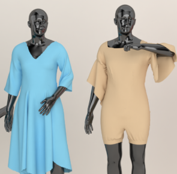
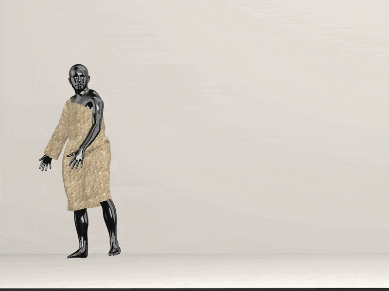
Research Scientist · CV / 3D / Generative AI
I am a Senior Researcher at Qualcomm and I got my PhD in Computer Science from the University of Oulu, Finland. At Qualcomm AI Research, I work on building perceptual systems for the physical world, with a focus on 3D reconstruction, neural rendering, and generative vision.
My work spans 3D reconstruction, neural scene representations, depth estimation, and controllable image generation. I am especially interested in systems that are both physically grounded and computationally efficient.
Selected work


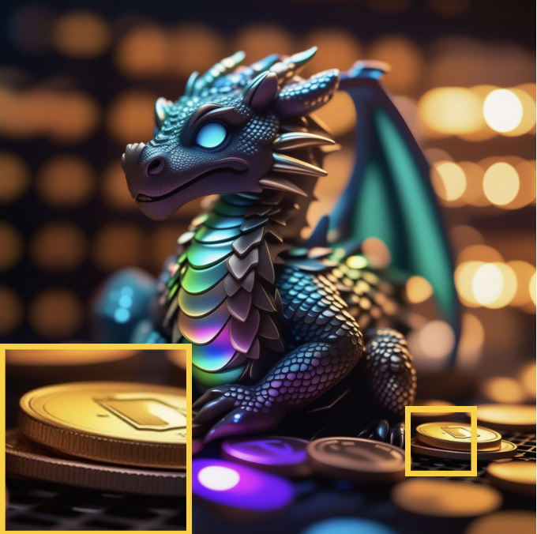
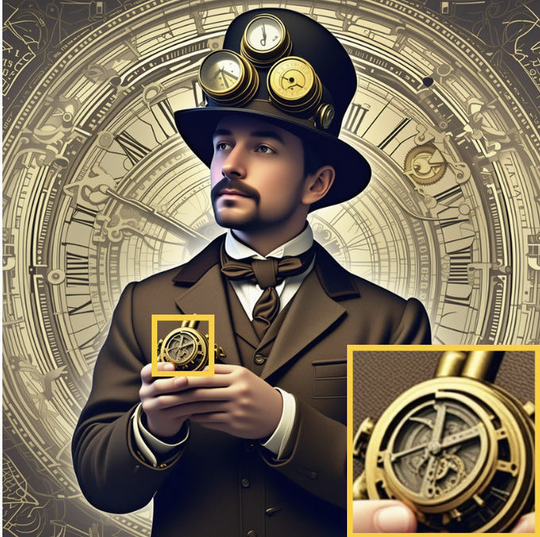
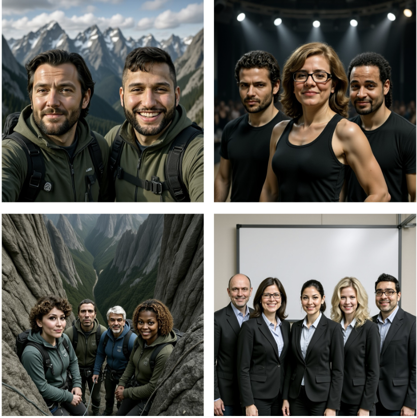
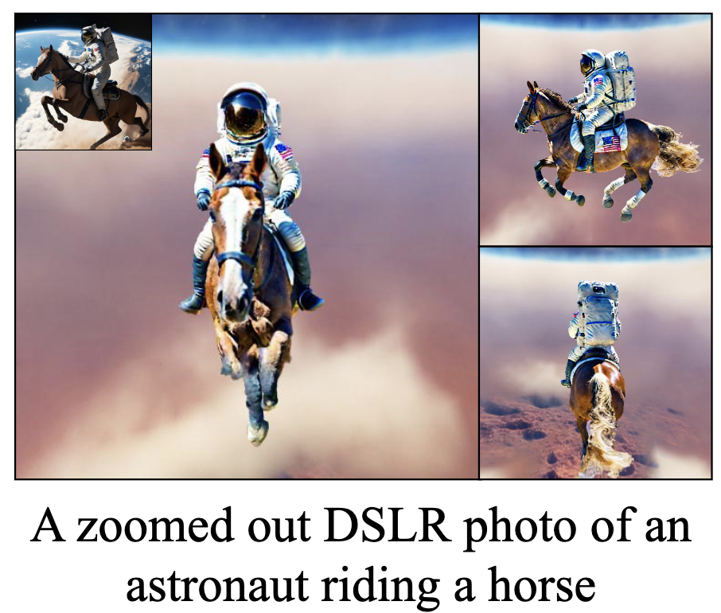

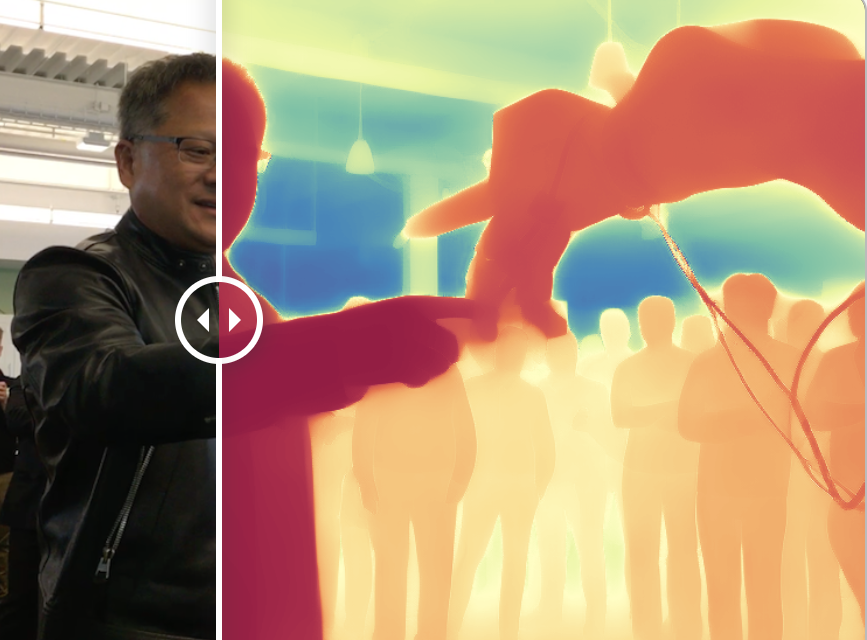
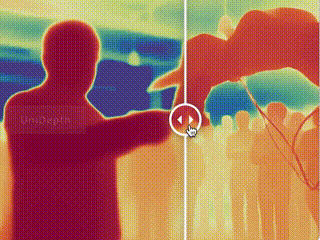

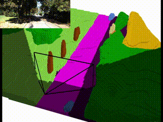
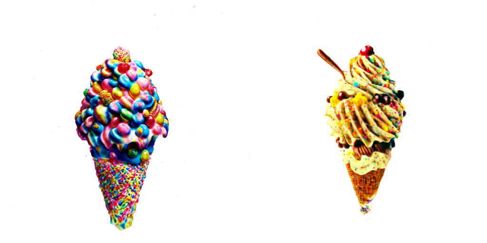
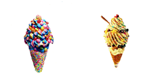
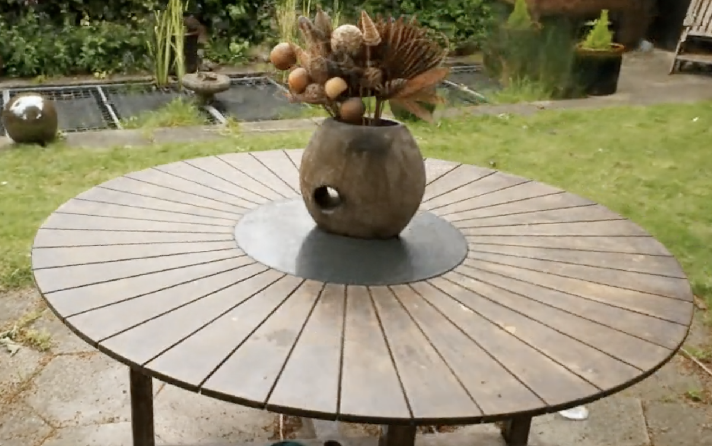
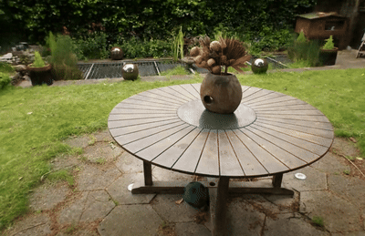
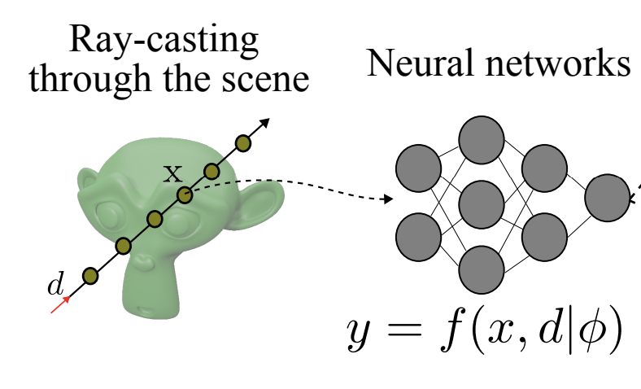
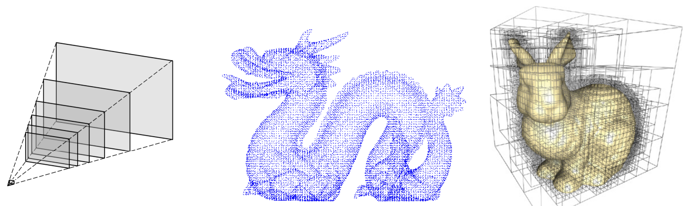
Introducing neural scene representations for efficient and compact learning-based novel view synthesis.
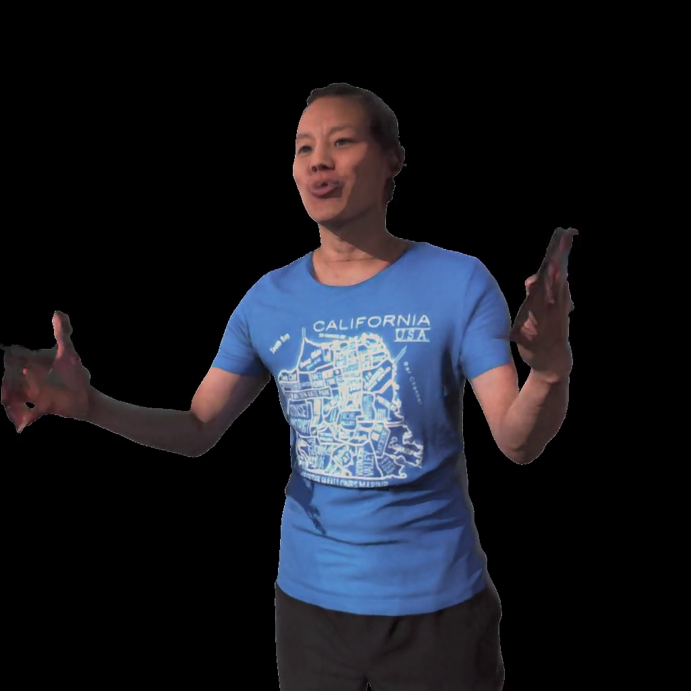

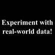
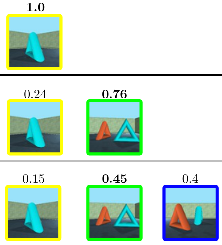
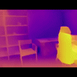
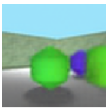
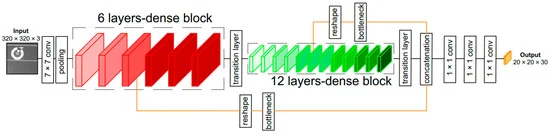
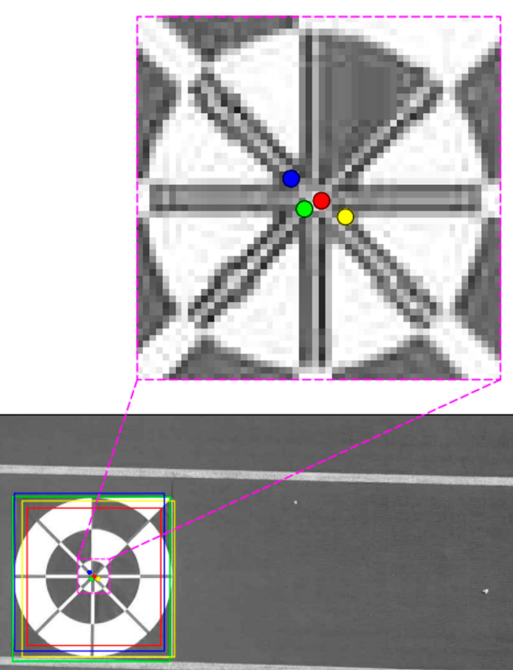
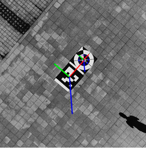
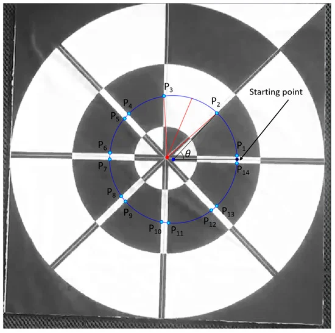